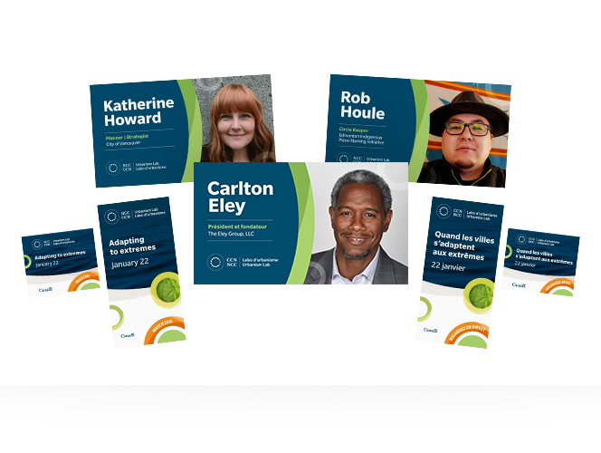
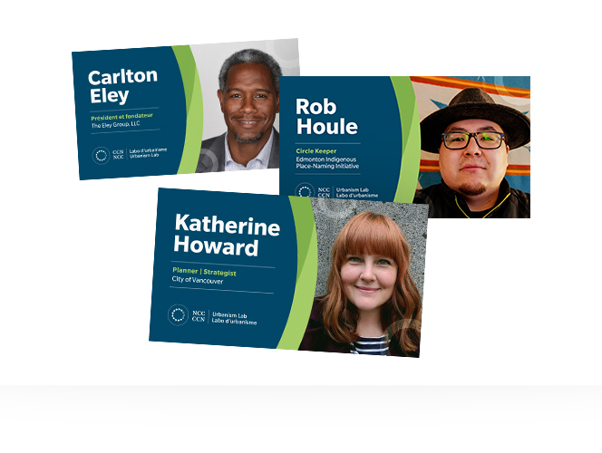
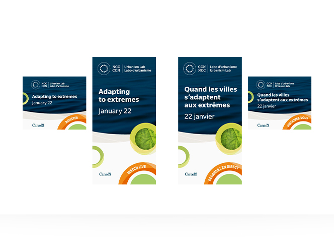

<!--Work Preview section-->
<section class="offset section">
			
	<!--Inner content-->
	<div class="innerContent">

		<!--Container-->
		<div class="container clearfix">
			<div class="fifteen columns">
				<div class="work-preview-close"></div>
			</div>
		</div>
		<!--Container-->
		
		<!--Container-->
		<div class="container clearfix">

			<div class="fifteen columns">

				<!--slider-->
				<div class="work-preview-slider clearfix flexslider" >

					<div>

						<ul class="slides">
							
							<li>
								
							</li>
							
							<li>
								
							</li>

							<li>
								
							</li>

						</ul>

					</div>
					
				</div>
				<!--slider-->

			</div>


			<div class="fifteen columns work-info">
				<h1 class="title">NCC Urbanism Lab Web Ads and Social Media Graphics<br><span>Web and Social Media</span></h1>
				<p>The NCC’s Urbanism Lab is an innovative space where Canadians and leaders get together to inspire the future of Canada’s Capital Region. Leaders from across the country are invited to share their expertise through public seminars ranging in topics from urbanism, design, heritage and conservation, sustainability, and placemaking.</p>

				<p>To advertise upcoming events, the Urbanism Lab uses web ads and social media graphics to encourage registration and attendance. With a newly developed brand in place, the Urbanism Lab needed to refresh their web and social media ads. I was responsible for translating the new look and feel and applying them to brand new templates.</p>

				<p>The new Urbanism Lab brand uses the NCC curve and decorative circular shapes that also act as frames for secondary imagery. Bright lime greens and oranges bring life to the design and present a fresh and forward-thinking theme perfectly representing the Urbanism Lab’s main objective – to promote innovation and move Ottawa to a more sustainable future.</p>

				<p>The web ads have three main components: the main image, the event info, and the call-to-action. The image – which changes to reflect the topic – is placed in a shape that mimics the branded NCC curve that is seen on all collateral. It was important for the call-to-action button to be a prominent feature of the ad, so the bright circular motif was used as a bold way grab the attention of potential registrants.</p>

				<p>The social media graphics are used as a series to highlight each speaker of an upcoming event. The name of the expert is written in large bold letters to catch the viewer’s eye and accompanying text outlining their job title and company is placed underneath. The circle motifs are also carried over and are used as accents to enhance visual interest.
				</p>

				<!--<div class="social-icons">
					<ul>
						<li><i class="step fi-heart"></i><span>100</span></li>
						<li><i class="step fi-social-facebook"></i><span>620</span></li>
						<li><i class="step fi-social-twitter"></i><span>450</span></li>
						<li><i class="step fi-social-pinterest"></i><span>100</span></li>
					</ul>
				</div>-->

			</div>


		</div>
		<!--Container-->
	
	</div>
	<!--Inner content-->

	
</section>